영진 (Yeong-jin)
왕립 물류총감 겸 비축의 수호자
새우 2kg(60미), 맛술, 나정순 양념쭈꾸미(3팩), 밀가루, 삼진어묵탕, 닭발 1.8kg(900g×2), 와인용 치즈, 들기름, 김치·부침·튀김가루, 케찹·마요네즈, 스팸, 진라면 10봉, 김·캔참치, 양념통·식용유, 일회용 젓가락, 쓰봉, 다진마늘까지 사실상 식자재 마트를 통째로 이고 온 절대 군주.
2026 봉봉캠프 2박 3일 그랜드 테이스팅 코스

부탄가스 8통과 이소가스, 그리고 피크닉 와인잔 위에 피어오르는 전설적인 2박 3일의 미식 서사시.
119,700원(운송비 별도) 보일링 시푸드부터 나정순 쭈꾸미, 단 한 개도 빠짐없는 16가지 심야 안주 풀코스, 신라면 대 진라면 20봉지 대전, 그리고 정체불명의 “청종?? 백화수복”까지 — 미슐랭 3스타의 예우로 헌정합니다.
Prologue & Les Mécènes
Nos Nobles Pourvoyeurs qui ont Bâti ce Festin
“위대한 캠핑 요리는 거창한 주방에서 나오지 않습니다. 새우 2kg을 들고 묵묵히 걸어오는 발걸음, 운송비 별도 119,700원을 결제하는 대담한 손가락, 그리고 끝없이 쏟아지는 일회용 소주잔과 다진 마늘 속에서 비로소 탄생합니다. 오늘 밤, 우리 모두의 위장에 별 세 개를 수여합니다.”
왕립 물류총감 겸 비축의 수호자
새우 2kg(60미), 맛술, 나정순 양념쭈꾸미(3팩), 밀가루, 삼진어묵탕, 닭발 1.8kg(900g×2), 와인용 치즈, 들기름, 김치·부침·튀김가루, 케찹·마요네즈, 스팸, 진라면 10봉, 김·캔참치, 양념통·식용유, 일회용 젓가락, 쓰봉, 다진마늘까지 사실상 식자재 마트를 통째로 이고 온 절대 군주.
대양의 보일링 제독 겸 파스타 공학자
본 코스 최고가 시그니처 보일링시푸드 풀세트(119,700원·운송비 별도)의 단독 스폰서. 여기에 파스타 소스 3통에 맞서 과감히 파스타면 4봉지를 투하한 카리스마 탄수화물 전략가.
심해 어업 공작 겸 교자 마에스트로
우럭·고등어 생선구이 3마리와 쫄깃한 갑오징어를 하사한 바다의 귀족. 동시에 비비고 교자 2봉과 양념통·식용유까지 챙긴 문무겸비 조달관.
30구 양계장 남작 겸 브런치 장인
계란 30구 대란 한 판과 식빵을 통째로 공급하며 심야 계란후라이·계란말이부터 다음날 아침 계란토스트까지 캠프의 단백질과 아침을 책임지는 황금 손.
새벽배송 미식 큐레이터
마켓컬리 직송 해물짬뽕탕 밀키트를 엄선해 밤안개 속 얼큰한 국물의 품격을 한 단계 끌어올린 샛별 큐레이터.
황금 버터와 고구마의 연금술사
새우구이를 미슐랭 풍미로 승화시키는 핵심 열쇠 ‘버터’와 모닥불 디저트 ‘고구마’, 그리고 젓가락을 찬조한 감성 터치의 달인.
파인 다이닝 테이블웨어·위생 수호 기사단
홍주: 어떤 기름기와 국물 앞에서도 굴하지 않는 휴지 2팩.
경민: 에스프레소와 소주·맥주·안주를 모두 아우르는 종이컵(소·대) 1줄씩 완비!
Acte I · Premier Dîner
Prélude au Charbon de Bois et Crustacés Flambés
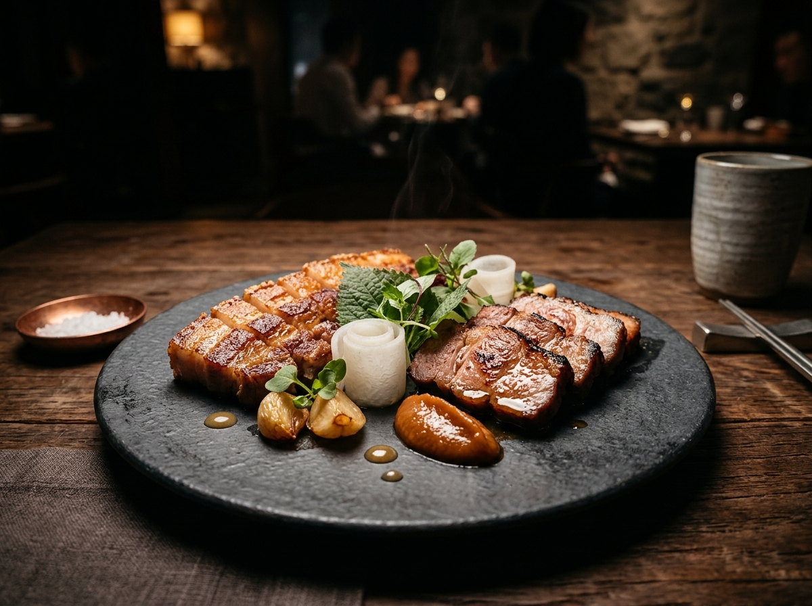
첫날 밤 불판의 순결함을 깨우는 2박 3일의 개막식. 기름진 마블링의 삼겹살과 탄탄한 식감의 목살을 노릇하게 시어링해 낸 뒤, 아삭한 쌈무 리본과 상추·깻잎·고추·마늘·양파로 정교하게 랩핑해 즐기는 K-파인다이닝의 정수. 기분이 내키면 “찌개류(옵션)”가 예고 없이 소환됩니다.
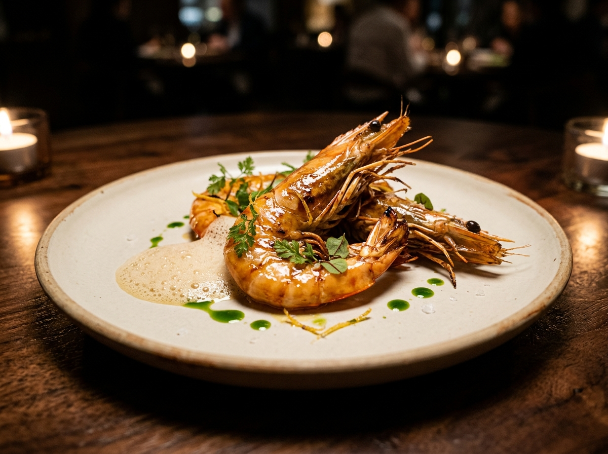
약 60마리(2kg)에 달하는 갑각류 군단이 소금 침대 위가 아닌 이수의 황금 버터와 영진의 맛술을 만나 붉게 타오릅니다. 새우 머리의 고소함이 폭발할 때쯤 다들 껍질 까느라 대화가 잠잠해지는 ‘침묵의 미식 타임’이 찾아옵니다.
Acte II · Le Grand Festin du Deuxième Soir
Fruits de Mer Impériaux & Poulpe Légendaire
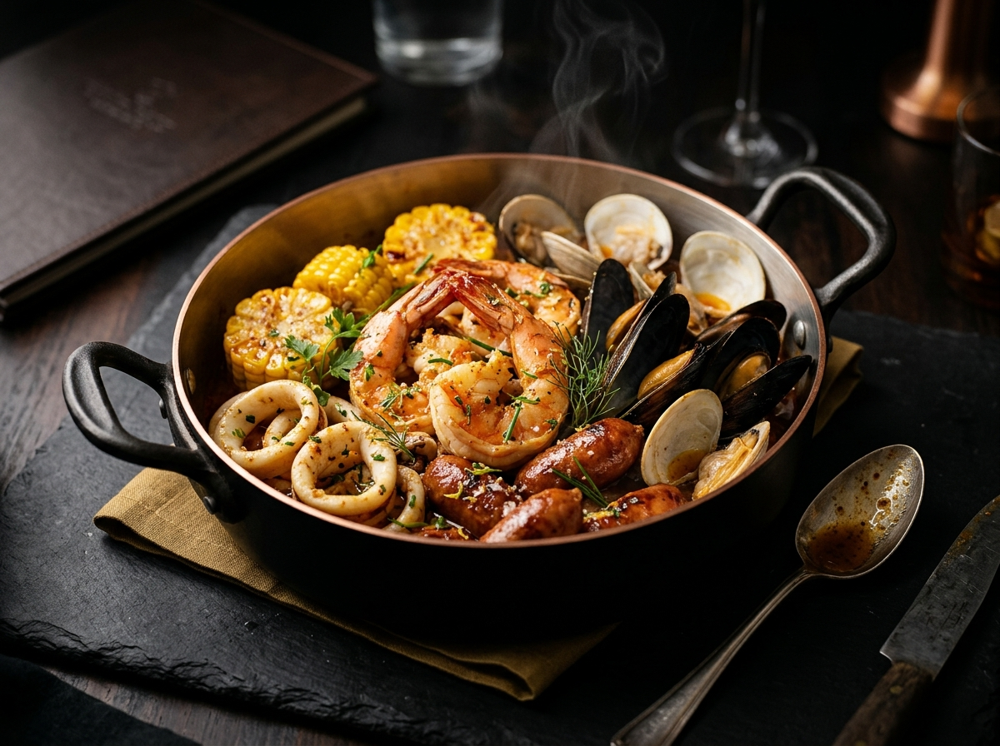
“밀키트 2세트 + 탈각새우 900g + 해물모둠 600g + 오징어 500g = 119,700원(운송비 별도).” 영수증 숫자부터 웅장한 본 코스의 절대 간판. 이미 껍질이 벗겨진 탈각새우 900g 덕분에 손이 깨끗한 귀족적 식사가 보장됩니다. 단, 셰프의 애절한 메모가 남아 있으니: “비엔나 소세지 구매 부탁드립니다.”
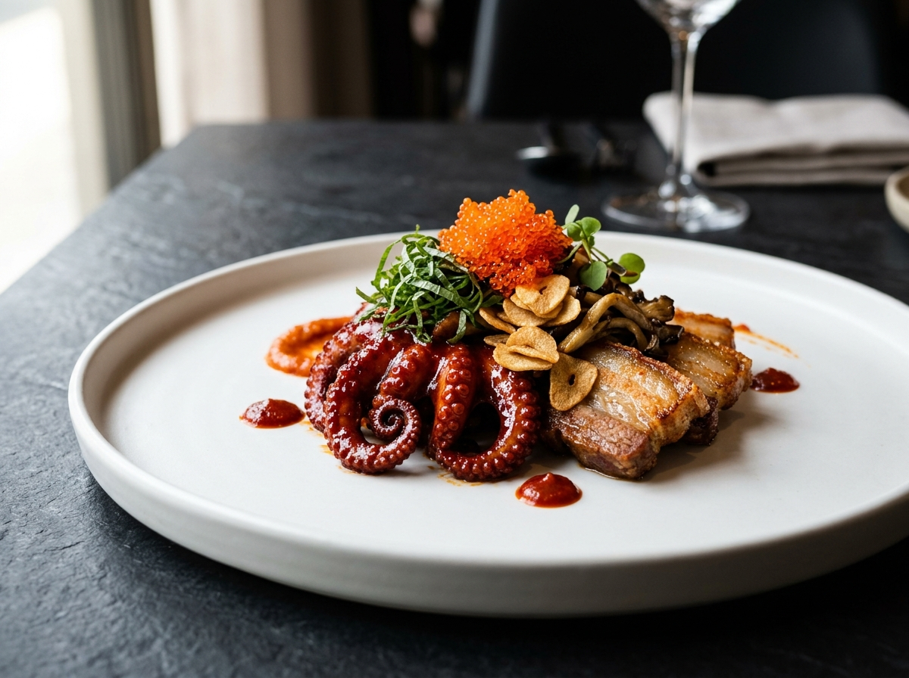
전설의 명가 나정순 할머니의 붉은 비법 양념(15,000원×3팩)을 영진 바이어가 3연타로 공수했습니다. 지글지글 녹아내린 삼겹살 기름과 버섯·마늘이 매콤한 쭈꾸미와 엉키고, 향긋한 깻잎 위에 주황빛 날치알 캐비어를 듬뿍 얹어 한 입에 넣으면 캠프장이 곧 미슐랭 3스타로 변합니다.
Acte III · Les Intermèdes de l'Après-Midi
Bistrot d'Après-Midi, Pâtes & Galette de Kimchi
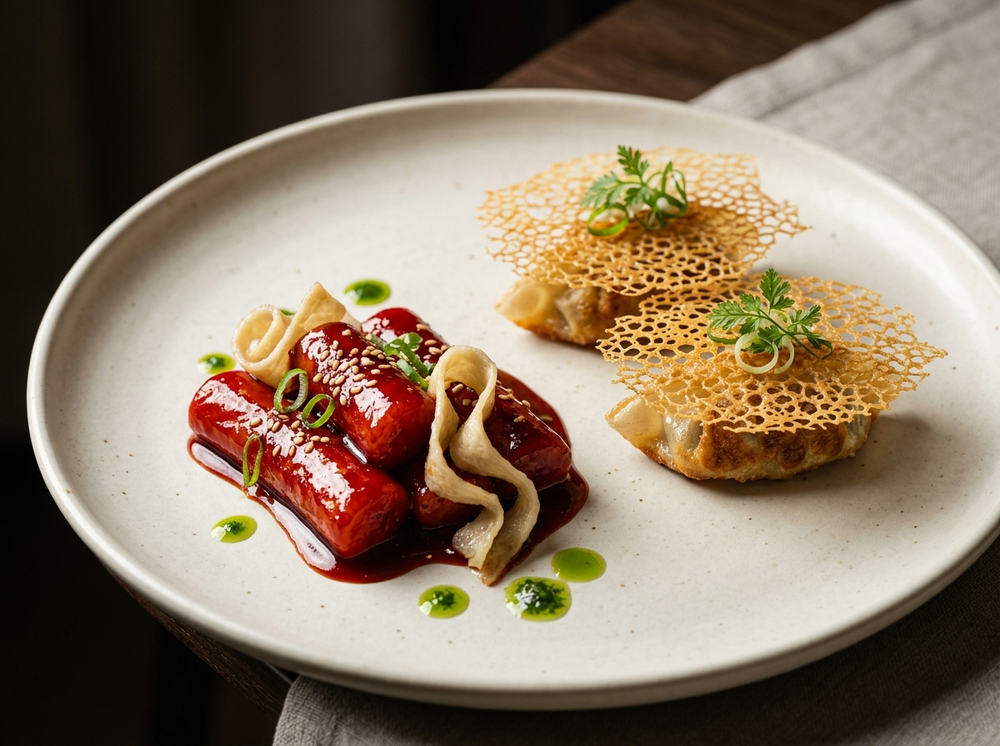
저녁 만찬을 기다리다 지친 영혼들을 위한 오후의 구원자. 이미 구매 완료된 밀키트 떡볶이·어묵 듀오가 달콤매콤한 벨벳 글레이즈를 뽐낼 때, 범규 공작의 비비고 교자 2봉지와 영진의 밀가루가 만나 바삭한 눈꽃 날개 군만두로 탄생해 떡볶이 소스에 완벽히 적셔집니다.
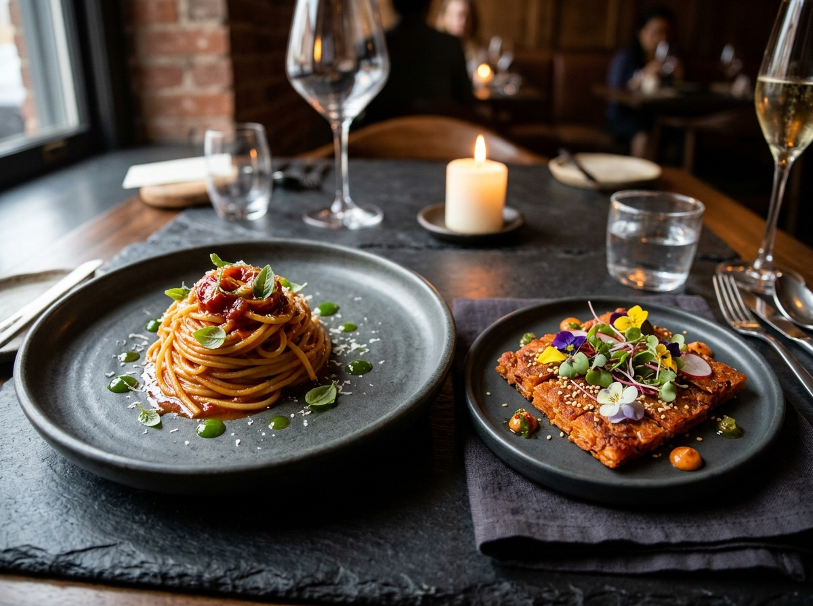
이탈리아와 한국의 국경을 허무는 오후의 더블 코스. 파스타 소스 3통에 호준의 파스타면 4봉지를 맞추는 긴장감 넘치는 수분-농도 조절의 미학이 펼쳐지고, 옆 프라이팬에서는 영진표 김치·부침가루·튀김가루 황금 배합으로 구워낸 초바삭 김치전 갈레트가 자태를 뽐냅니다.
Acte IV-A · Les 16 Amuse-Bouches de Minuit (N° 01–04)
Oden de Samjin, Chrysalide Sauvage, Jjamppong & Dakbal 1.8kg
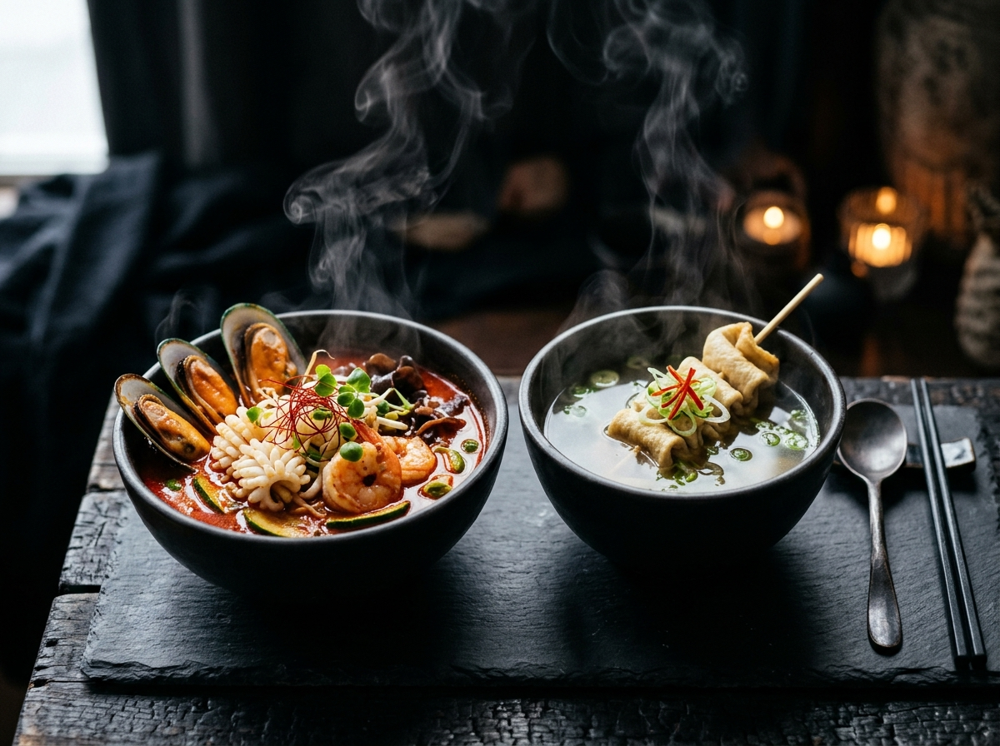
[N° 01 오뎅탕] 영진이 부산 명가 삼진어묵으로 미리 확보해 둔 깊고 맑은 어육수 컨소메.
[N° 03 해물짬뽕탕] 현미 소믈리에가 마켓컬리에서 공수한 불향 가득 얼큰한 해물 육수. 밤이 깊어질수록 국자 회전수가 빨라집니다.
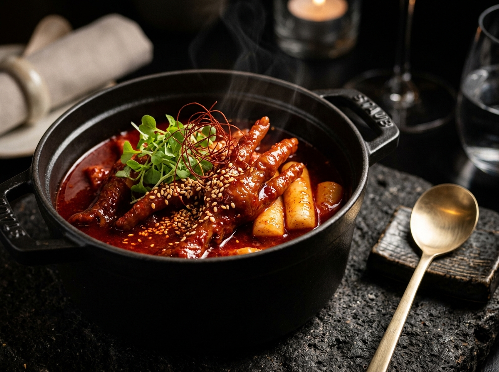
[N° 02 번데기탕] 통조림 2~3캔에서 갓 깨어난 야생의 단백질에 알싸한 청양고추를 송송 썰어 넣은, 술자리 감성 100% 아방가르드 브로스.
[N° 04 국물닭발] 닭발 900g×2팩, 총 1.8kg의 압도적 콜라겐 스튜! 입술이 붙는 강렬한 매운맛으로 야식의 왕좌를 지킵니다.
Acte IV-B · Les 16 Amuse-Bouches de Minuit (N° 05–09)
Fromage, Chou au Périlla, Galette de Kimchi, Banane Brûlée & Morue
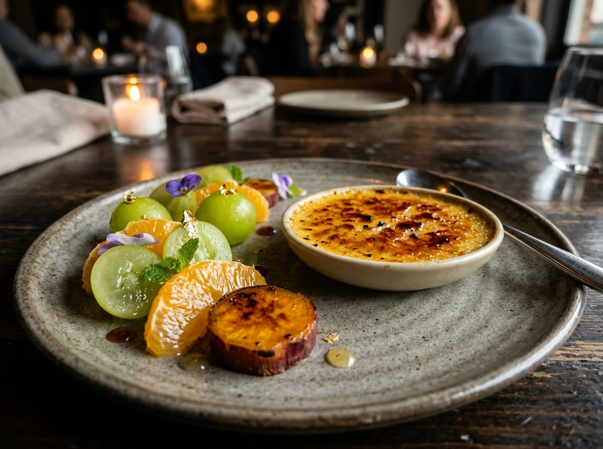
무려 부탄가스 8통과 이소가스가 대기 중인 진정한 이유! 잘 익은 바나나에 설탕 코팅을 올려 캠핑 토치로 바삭하게 구워내, 스푼으로 유리막 깨듯 톡 깨 먹는 미슐랭 3스타급 심야 달콤 안주입니다.
소모품의 ‘피크닉 와인잔’을 빛내기 위해 영진이 미리 구비해 둔 치즈 셀렉션. 모닥불 옆 야외 살롱을 완성합니다.
아삭한 양배추에 영진의 고소한 들기름을 두른 K-오리엔탈 샐러드. 묵직한 고기·닭발 사이 입안을 씻어주는 천사 같은 안주.
영진이 김치에 부침가루와 튀김가루까지 완벽 세트로 챙긴 황금 배합. 빗소리(혹은 장작 소리)가 나면 무조건 부쳐야 하는 국룰.
배가 한계치에 달했을 때 비로소 빛나는 영원의 클래식. 마요네즈·간장·청양고추 3종 디핑을 곁들이면 새벽 토크가 끝이 없습니다.
Acte IV-C · Les 16 Amuse-Bouches de Minuit (N° 10–16)
Rascasse, Maquereau, Seiche, Œufs d'Or, Terrine de Spam & Toast
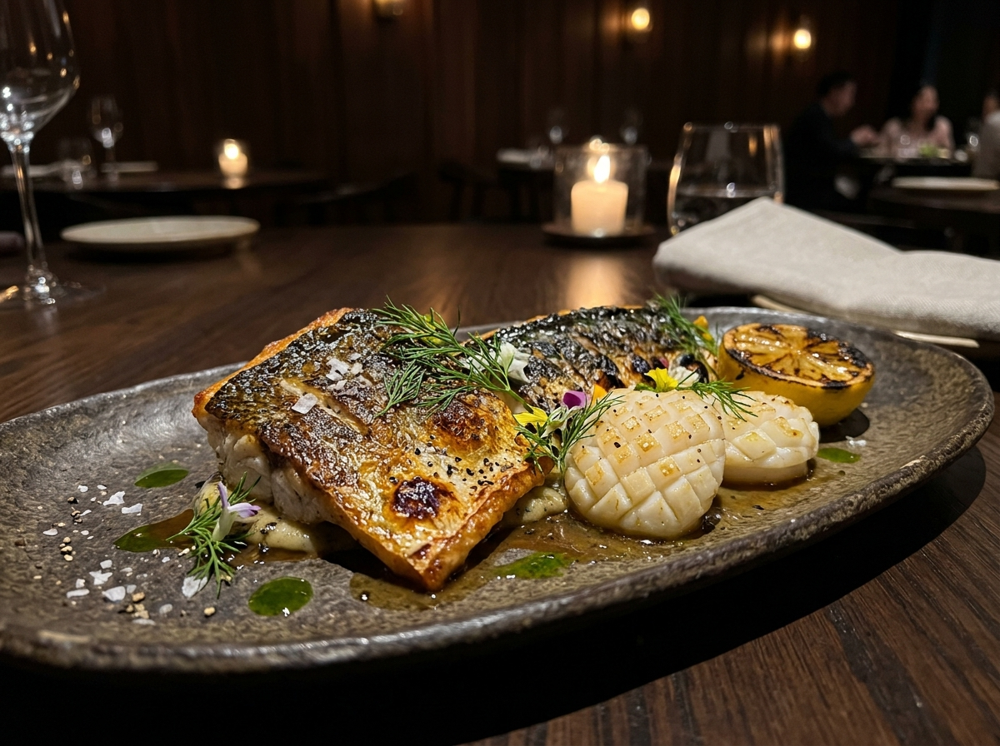
범규 어부가 통 크게 찬조한 해산물 3종 세트! 바삭한 껍질 속 촉촉한 흰 살이 살아있는 우럭구이(N° 10)와 기름진 풍미의 고등어구이(N° 11) 도합 3마리, 그리고 버터를 머금고 쫄깃하게 구워진 갑오징어버터구이(N° 12)까지 바다가 캠핑장에 상륙합니다.
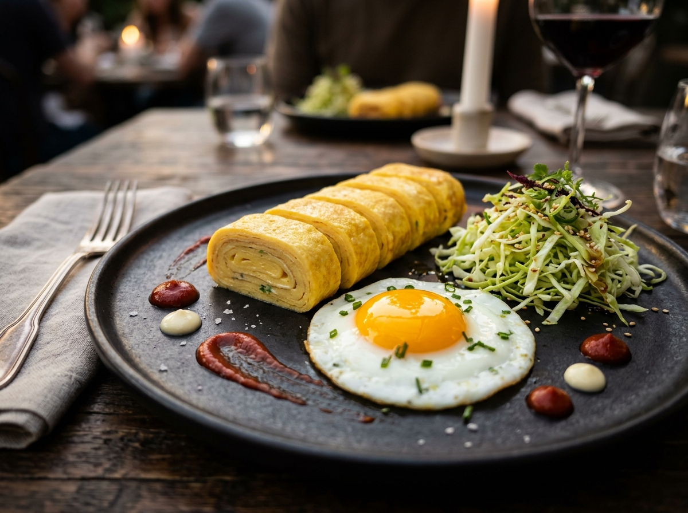
형근 남작이 공수한 계란 30구의 위엄! 완숙·반숙 취향을 모두 포용하는 계란후라이(N° 13)와 도톰하게 말아 썰어낸 계란말이(N° 14) 위에 영진표 케찹과 마요네즈가 인상파 붓터치처럼 내려앉습니다.
노릇하게 겉면을 시어링한 육즙의 황금 사각형 테린. 햇반과 함께해도, 소주잔과 함께해도 무패를 자랑하는 영진 찬조의 절대 강자.
16대 안주의 대미를 장식하는 형근의 계란·식빵 컬래버레이션! 밤에는 달콤짭짤한 야식 토스트로, 아침에는 아메리카노와 함께하는 브리오슈 브런치로 변신합니다.
Acte V · Le Réveil & Chariot de Douceurs
Duel de 20 Ramens, Nurungji, Fruits & Collations
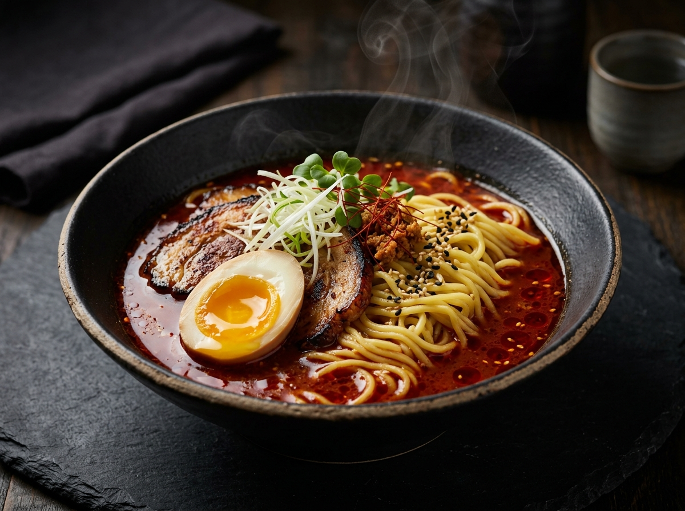
전날 밤 16가지 안주를 정복한 용사들을 일으켜 세우는 아침의 대격돌! 구매 예정인 신라면 10봉 파벌과 영진이 찬조한 진라면 10봉 파벌이 총 20봉의 화력으로 캠핑장 아침을 지배합니다.
속을 부드럽게 감싸주는 구수한 숭늉과 누룽지 코스. 영진이 찬조한 김·캔참치, 햇반과 만나면 가장 한국적인 모닝 리커버리가 완성됩니다.
청량한 샤인머스캣·감귤·바나나, 모닥불에 구워 먹는 고구마(이수), 손이 멈추지 않는 과자, 그리고 간편 샐러드·안주용 크래미·김·캔참치(영진)까지 쉴 틈 없는 간식 트롤리!
La Cave, 16 Amuse-Bouches & Inventaire Total
Zéro Oubli — 100% des Ingrédients & Accessoires Certifiés
요청사항 메모란에 암호처럼 남겨진 한 줄: “청종?? 백화수복”. 정종을 뜻하는 오타인가, 새로운 시그니처 주류의 탄생인가? 소믈리에 팀이 진위를 추적 중입니다.
사이다 2L, 콜라 2L, 생수 12통, 카누와 함께 긴급 요청된 아메리카노 2L, 그리고 물음표가 핵심인 “갈아만든배(숙취해소?)”가 대기 중입니다.
우아한 피크닉 와인잔, 실속파 일회용 소주잔, 경민이 챙긴 종이컵(소·대) 1줄씩까지 모든 주종에 대응합니다.
엑셀표 기본구매·장보기완료·소모품의 모든 품목을 누락 없이 기록했습니다: